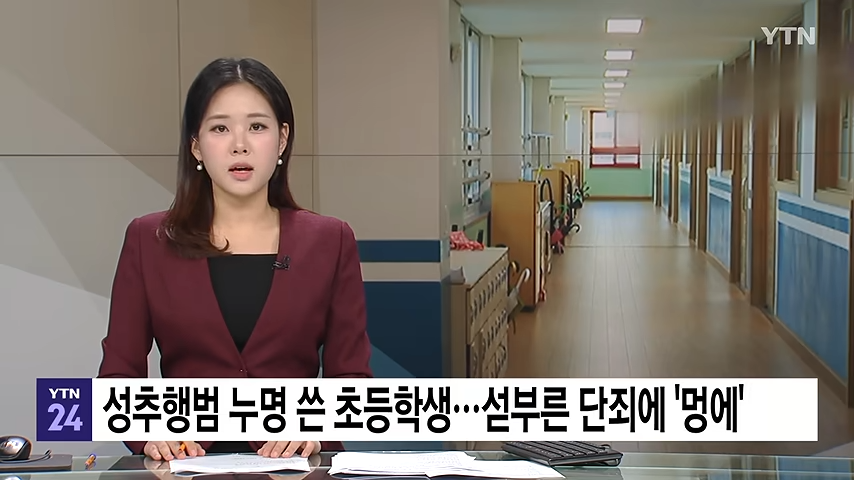
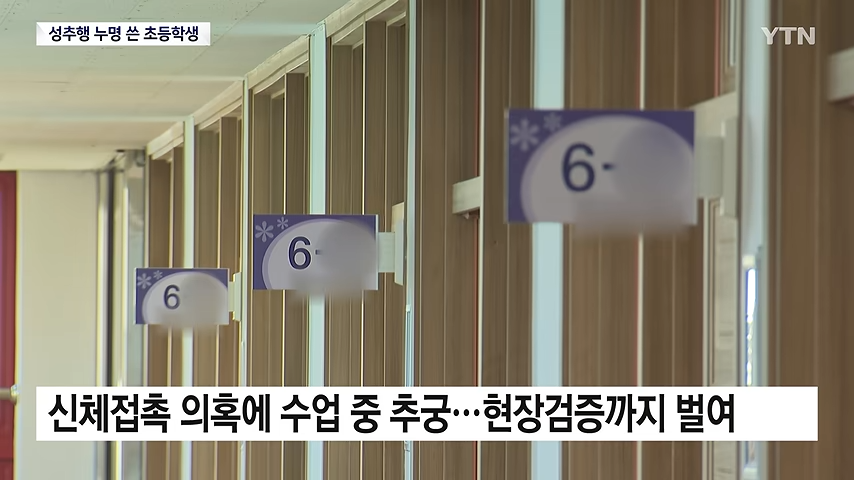
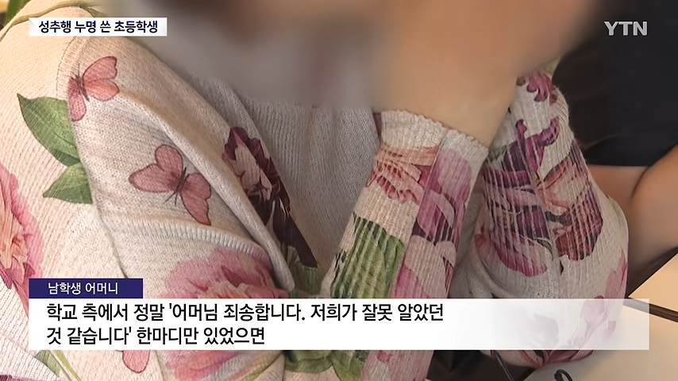
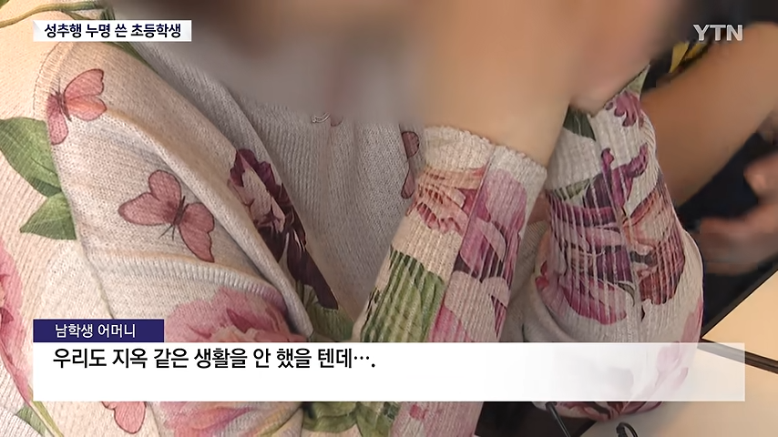
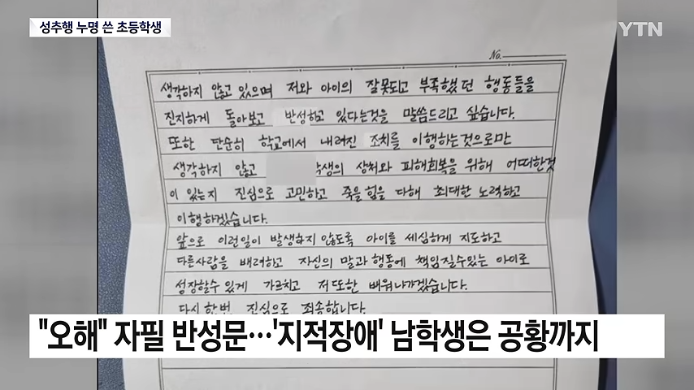
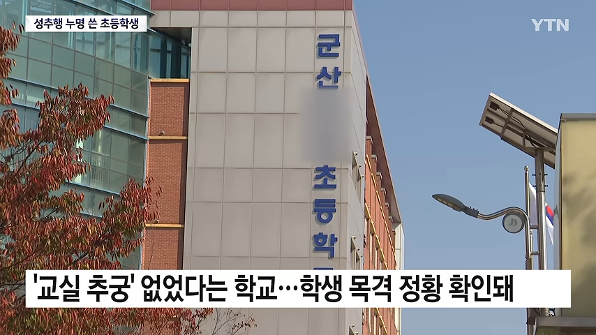
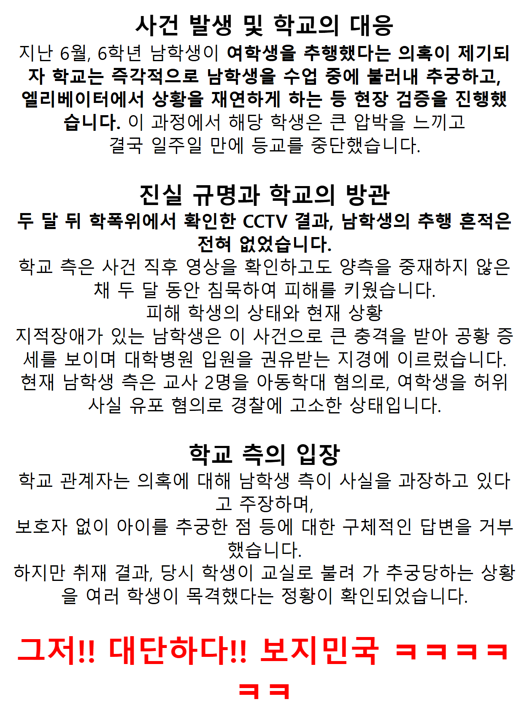

얼마나 리스크가 없으면 지적장애인 초등학생까지 담궈서 해먹을 생각을 하나...







얼마나 리스크가 없으면 지적장애인 초등학생까지 담궈서 해먹을 생각을 하나...
이야...
캬... 이게 나라지 암 ㅋㅋㅋ
??? : 무고죄?! 그게 뭔데?!
헌법대로 하는건데 뭐 ㅋㅋ
나거한을 괜히 말하는게 아님
제34조 제3항 (인간다운 생활을 할 권리): 국가는 여자의 복지와 권익의 향상을 위하여 노력하여야 한다.
ㅋㅋ 시발 ㅋㅋ
아니 이거 실화야??
이런거 보면 군대랑 학교시스템의 결이 같음
허지웅 말처럼 감시하지않으면 학교도 최소한의 것도 하지않음. 지들 커리어 노답되거든
학교 전체에 cctv 설치하자니깐.... 왜 설치안하지? 사각지대 없이 반마다 4개씩, 복도에는 양방향으로 설치
돈이여
Cctv가 생각보다 비싸다. 단순 cctv 뿐만 아니라 배선 깔고 서버 구축하고 한두푼이 아님. 초기투자만 적어도 2조해야하고 운영비도 꽤 많이 듬.
교육관련 세금 수조 남는다는데 여깇쓰면 되겠네
공정한 행정 절차를 교육부 차원에서 만들어 학교에 배포해야 하는 것이 먼저가 아닐까?
무엇보다 보호자 대동 없이 저런 일이 벌어졌다는 게 가장 큰 문제인 것 같아
비합리적인 일에는 합당한 의문을 제기하고, 시정하도록 요구해야 한다고 봐
어느 학교인지 알려줘
지적장애인을 장애인 학교에 보내라 좀